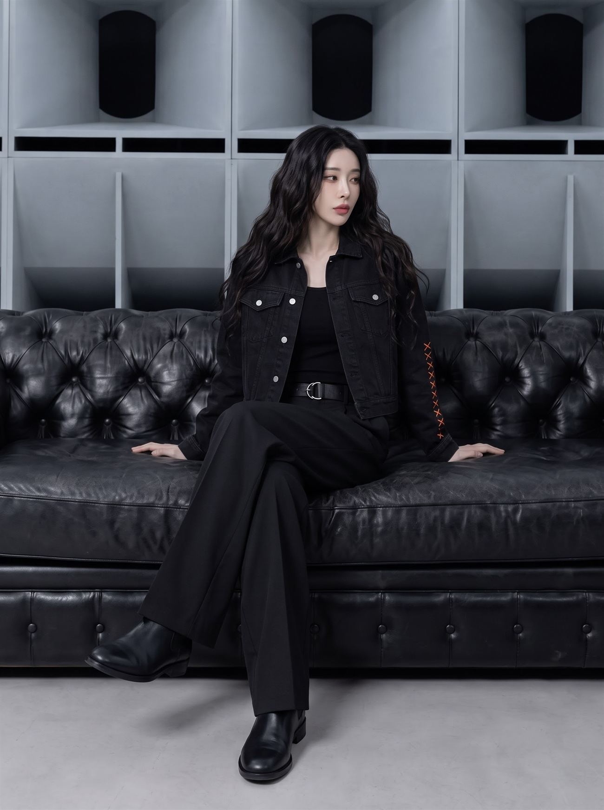
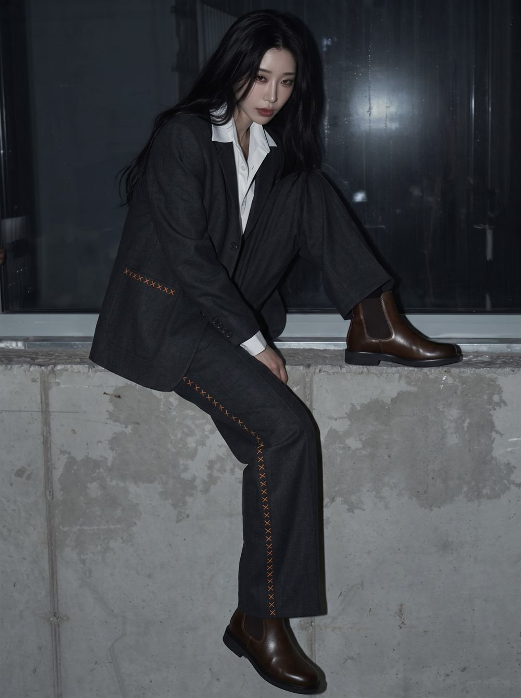
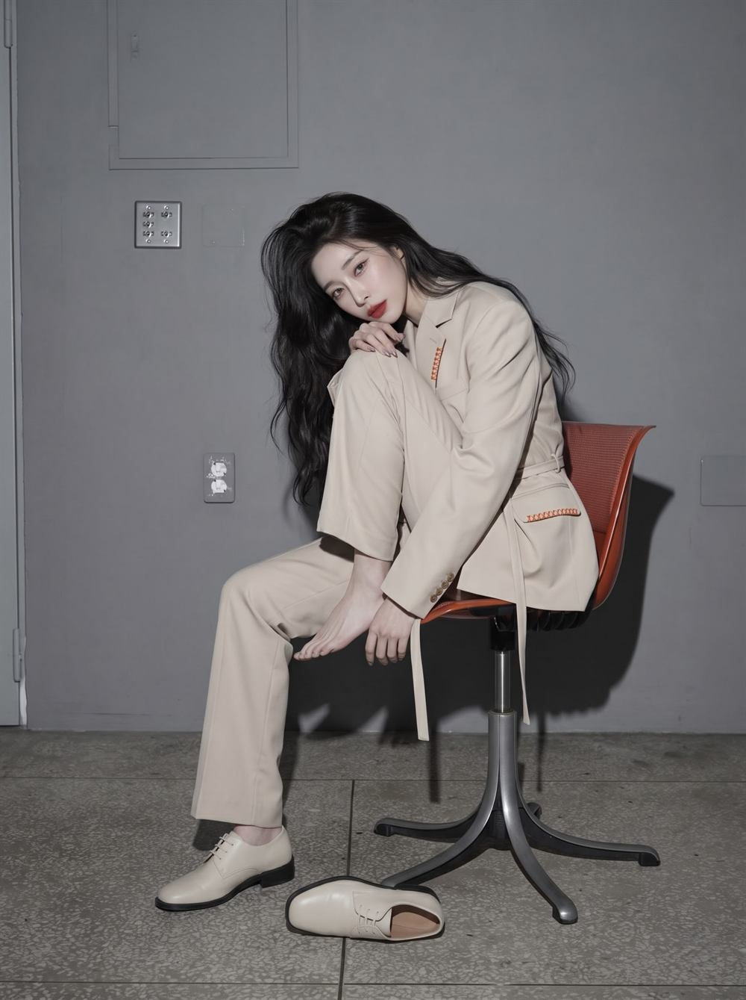
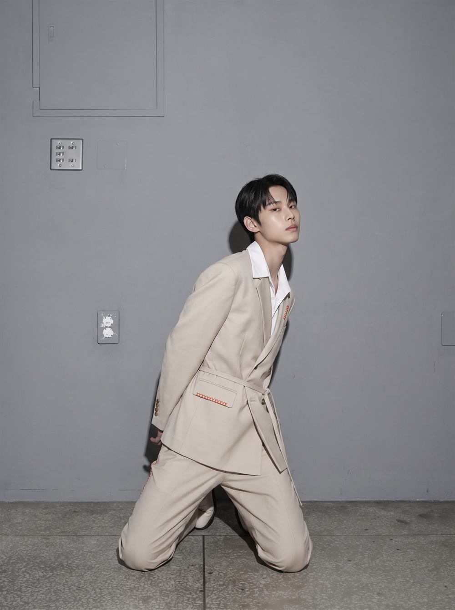
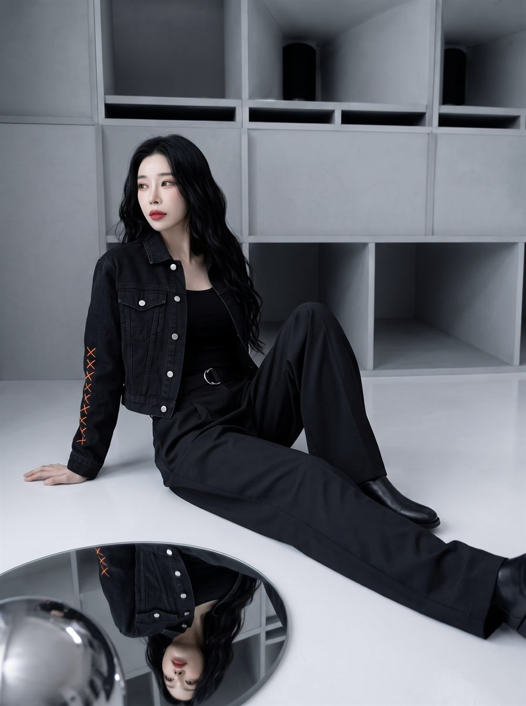
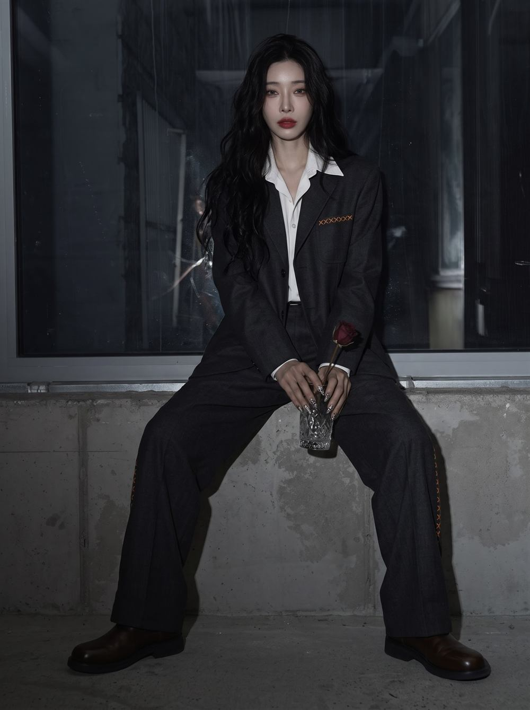
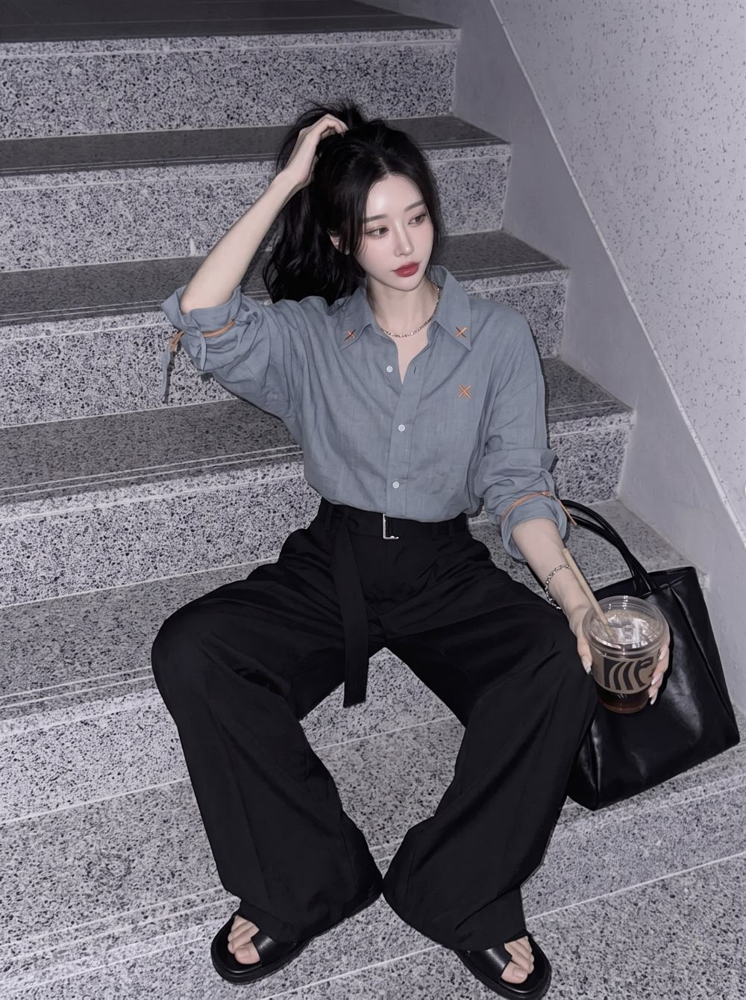

Heritage
중촌동의 유산
대전 중촌동 봉제 패션 특구, 정통 맞춤양복 장인들의 숨은 기술력을 브랜드의 뼈대로 삼습니다.
40년 경력 장인과 협업한 표준 테크팩(도식화 · 봉제사양서)으로 원형을 기록합니다.
Craft Deconstruction · Genderless Tailoring
대전 지역번호 042, 중촌동 맞춤양복 거리. 수십 년 숙련된 봉제 장인의 테일러링 원형 위에, 옷 안쪽에 숨겨지던 시침실과 케어라벨을 겉으로 꺼내 핵심 스티치로 노출합니다. 미완성의 공정이 만드는 고결함, 그것이 042 TAILORING의 룩입니다.

Heritage
대전 중촌동 봉제 패션 특구, 정통 맞춤양복 장인들의 숨은 기술력을 브랜드의 뼈대로 삼습니다.
40년 경력 장인과 협업한 표준 테크팩(도식화 · 봉제사양서)으로 원형을 기록합니다.
Craft Deconstruction
정교한 테일러링 원형에 시침실 스티치를 결합합니다. 안쪽 공정을 겉면의 아이콘으로 뒤집습니다.
Safety Orange 시침실 · 노출 케어라벨 · 042 직조라벨.
Genderless Drape
드롭숄더와 유연하게 흐르는 와이드 실루엣. 동일한 패턴 하나로 남녀 모델 모두 완벽하게 소화합니다.
2-Size Genderless System.

042는 대전의 지역번호이자, 중촌동 봉제 패션 특구의 좌표입니다. 한때 정통 맞춤양복으로 붐볐던 이 거리는 조용히 쇠퇴해 왔습니다. 042 TAILORING은 그 장인들의 헤리티지를 현대 디자이너의 감성으로 승화시켜 거리에 다시 생명력을 주입합니다.
메인 봉제는 중촌동 수트 라인에서, 시그니처 십자 스티치는 공방과 연계한 100% 수작업으로. 옷 한 벌이 완성되는 과정 자체가 이 거리의 이야기가 됩니다.
Brand Identity
#FF5500 · Basting thread
시침실(Basting Thread)은 본봉제 전에 임시로 옷을 고정하는 실입니다. 완성된 옷에서는 뽑혀 사라지는 이 실을, 042 TAILORING은 주황색으로 바꿔 소매 끝과 라펠, 슬랙스 옆선에 영구히 남깁니다. 브랜드의 모든 의상은 이 포인트 스티치 하나로 정체성을 유지합니다.
No. 017 / 100
For:당신의 이름이 여기에 새겨집니다
* 라벨 예시. 실제 시리얼 번호와 문구는 현장에서 고객과 함께 결정합니다.
Color Palette Guide
Raw · Charcoal · Chalk · Orange
Raw Black
#050505
정통 테일러링의 깊은 무게감과 베이스
Tailor Charcoal
#2B2B2E
인더스트리얼 울 트윌 텍스처
Chalk White
#F5F5F7
패브릭 라벨 & 백그라운드
Safety Orange
#FF5500
시침실 스티치 시그니처 포인트


Genderless
남성복과 여성복의 경직된 구분을 해체합니다. 어깨선이 자연스럽게 떨어지는 드롭숄더와 와이드 실루엣은 성별에 관계없이 같은 드레이프를 만듭니다. 오버핏 2개 사이즈로 그레이딩을 정형화해 생산 공정을 단축하고 재고 리스크를 차단합니다.
SS · Look 01 – 04
Same outfit · Every body

소매 라인에 대형 Safety Orange X-스티치를 배치한 대표 데님 테일러드 셋업.

정통 양복의 고전적 품격에 슬랙스 옆선 시침실 라인을 더한 셋업.
허리 벨트 드레이프와 라펠·플랩 포켓 포인트 스티치가 돋보이는 젠더리스 룩.

카라 X-스티치 리넨 셔츠와 중촌동 봉제 도구 가방에서 모티브를 얻은 레더 토트.
Production & QC
Tech-pack · SAMS · Hand stitch
40년 경력 장인과 협업해 도식화, 봉제사양서(SAMS), Safety Orange 시침실과 042 직조라벨 규격을 표준화합니다.
메인 봉제는 중촌동 수트 라인에서, 시그니처 십자 스티치는 공방 연계 100% 수작업 핸드 스티치로 완성합니다.
남녀 구분 없는 오버핏 2개 사이즈로 그레이딩을 정형화해 생산 공정을 단축하고 재고 리스크를 차단합니다.